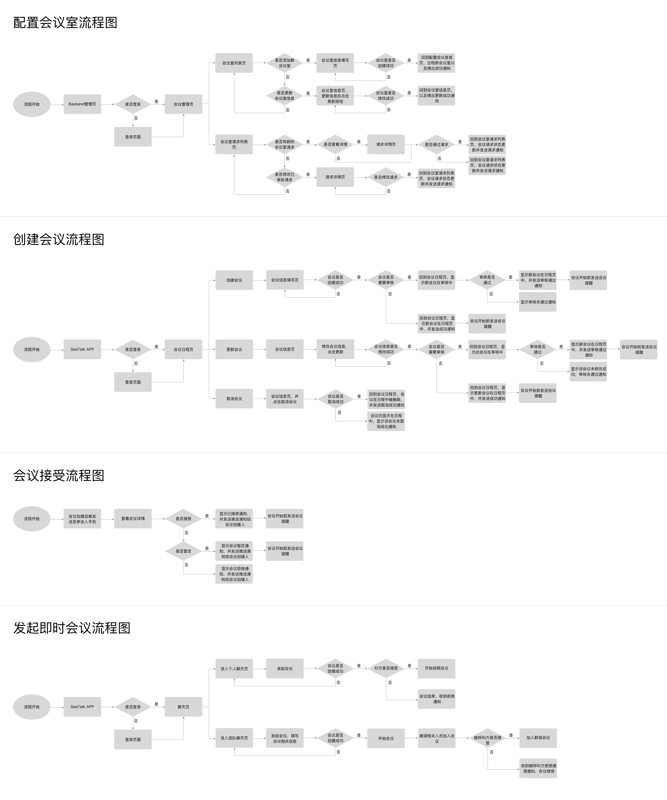

需求分析
业务需求
理解业务方想要达成的商业目标
Seatalk作为东南亚企业提供的商业沟通和协作平台，不可避免的需要解决每天在企业中发生的会议问题，并通过解决会议问题实现以下目标：
- 提升seatalk作为沟通协作平台的整体价值。
- 提升企业会议设定、会议管理、会议发起、会议变更、会议参与、会议通知的整体效率，优化整体流程。
- 充分考虑通用性，尽量满足不同企业的一般需求。
目标用户
区分目标用户类型
根据用户所想要达成的目标不同区分不同的用户角色，主要目标用户为：
- 会议管理者
- 会议发起者
- 会议参与者
- 会议主持者
- 会议室管理员
后续设计以主要目标用户为主，考虑主要目标用户的工作流，需求与痛点，次要目标用户虽所想要达成的目标有所不同，但是会议主持者在多数情况下与会议发起者或者会议参与者工作流重合，而会议室管理员默认会在每次会议开始或者结束前进行好会议室的配置工作，因此暂不纳入优先级高且必须实现功能的考虑范围中。
用户角色
基于主要目标用户创建用户角色
确认目标用户之后，基于主要的目标用户，展开第一轮的定性研究与访谈，基于访谈结果创建用户角色，帮助自己运用同理心从用户的角度思考需求和期待，也帮助团队理解目标用户，使得团队的目标更加具象与一致。
用户流程图
描绘流程总结问题与机会点
将三个角色如何参与到整个会议流程描绘出来，从最初的配置会议室到最终参加会议。思考在流程中每个角色是如何参与到整个流程中，在每个流程中遇到了什么样的问题，设计机会点是什么。

需求整理
场景 > 需求
从场景出发，结合用户流程图，综合考虑在场景中用户会遇到哪些问题，从而提炼需求。
交互设计
流程设计
根据需求梳理交互流程
基于用户需求，梳理解决用户问题，满足用户需求所需要的功能模块，并基于此展开交互设计。
交互设计
用户与我们的产品如何交互？
在流程图的基础上，详细的画出每一个页面里应该包含的信息与内容，并划分信息的重要与否，在交互稿中通过不同的大小轻重体现不同的重要等级，并写清楚交互流程，每个空间不同的状态，方便与开发、视觉沟通。